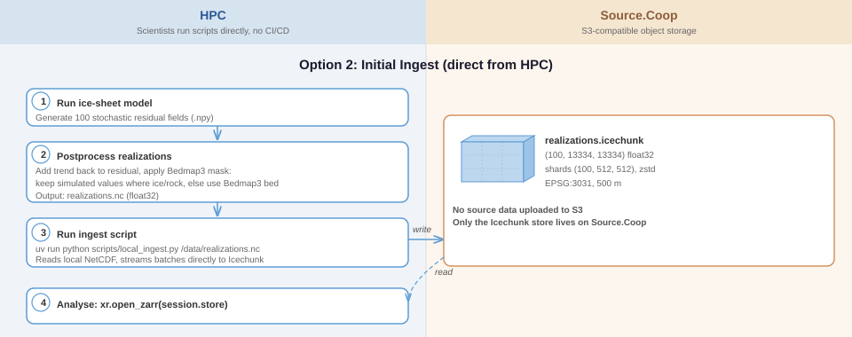
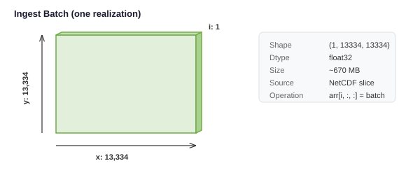
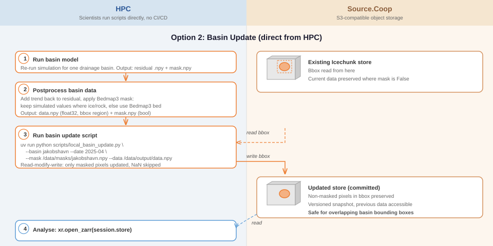
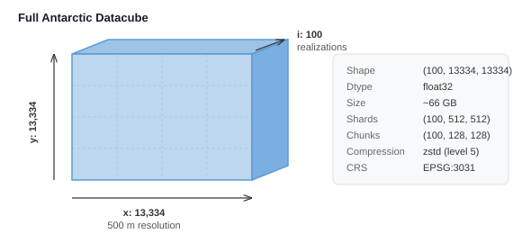
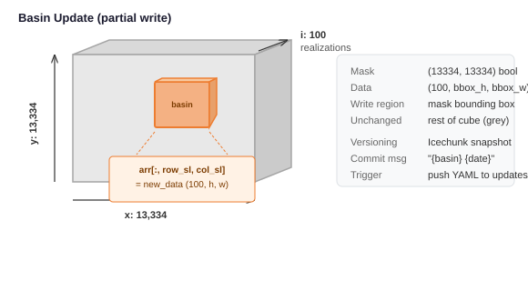
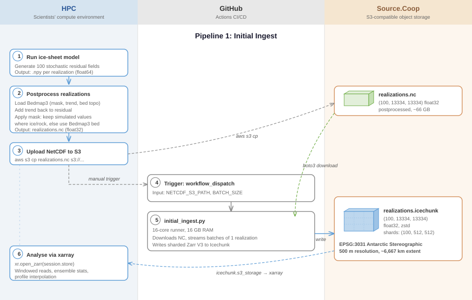
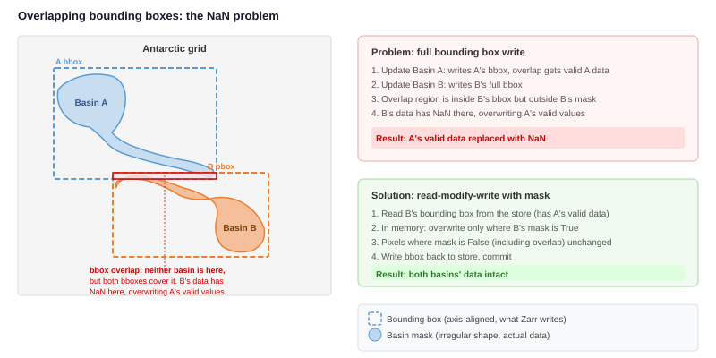

Data Pipeline
Ingest
The ingestion is enabled through a python script with minimal dependencies, which performs the following 3 operations:
- Initial ingest of realizations
- Partial updates of realizations
- Update methodology mask (TODO: validate "methodology" term)
In each case, the ingestion script can be run directly on the HPC infrastructure where the input NetCDFs already exist locally, or the NetCDF files can be uploaded to the source.coop S3 bucket, and the ingestion script will pull the files at runtime.

The ingestion script accepts the following parameters:
--type TYPE Input data type: 'realizations' (3-D cube with seed_id/y/x) or 'mask' (2-D spatial file)
--mode MODE Ingest mode: 'initial' (create a new store) or 'update' (partial update to an existing store)
--data PATH Local path or s3:// URI of the input NetCDF (env: DATA_PATH)
--store S3_URI s3:// URI of the Icechunk store on source.coop (env: STORE_S3_PATH)
--nc-var VAR Name of the data variable in the NetCDF (env: NC_VAR); auto-detected if omitted (tries "realizations", then
"__xarray_dataarray_variable__", then the first non-coord var)
--message MSG [update] Icechunk commit message (env: COMMIT_MESSAGE); defaults to 'Update'
--dry-run [update] Validate without writing (env: DRY_RUN)
0. Pre-requisites
In order for the ingestion script to write the icechunk archives to the source.coop S3 bucket, the user running the script must be authenticated with source.coop. (See: Data Upload for instructions to authenticate)
In cases where the ingestion is to be run on computer infrastructure other than the HPC where the NetCDF files are produced (eg: a personal computer) the NetCDF files must be first uploaded to the source.coop S3 bucket. (See: Data Upload for instructions on downloading the AWS CLI tool to upload files to the source.coop S3 bucket)
1. Initial ingestion
One-time ingestion of the full Antarctic ice-sheet datacube. Raw model output (residual fields) is postprocessed on HPC before ingestion: the Bedmap3 trend is added back to each residual, and a mask is applied to keep simulated values where ice or rock is present and use the original Bedmap3 bed topography elsewhere.
Each batch is a single realization slab streamed into the store:

To run ingestion directly from the HPC computer infrastructure (where the NetCDF exists locally)
uv run python scripts/ingest.py --type realizations --mode initial --data ./data/realizations.nc --store s3://us-west-2.opendata.source.coop/englacial/demogorgn/icechunk/realizations.icechunk --message "Initial ingest 2026-04-16"
To run ingestion on any other infrastructure, scientists should first upload the realizations NetCDF to the source.coop S3 bucket (see Data Upload) and then run the ingestion script specifying the S3 location of the realizations file:
uv run python scripts/ingest.py --type realizations --mode initial --data s3://us-west-2.opendata.source.coop/englacial/demogorgn/realizations.nc --store s3://us-west-2.opendata.source.coop/englacial/demogorgn/icechunk/realizations.icechunk --message "Initial ingest 2026-04-16"
2. Partial updates of realizations
The ingestion script will perform partial updates, using a read-modify-write pattern. Given a georeferenced NetCDF representing a subset of the realizations (subset can be either spatial subsets, or a subset of the realizations seeds, or both) the ingestion script will only overwrite the physical shards corresponding to the desired update area. This means NaN values outside the basin are never written to the store.

To run ingestion directly from the HPC computer infrastructure (where the NetCDF exists locally)
uv run python scripts/ingest.py --type realizations --mode update --data ./data/bed_990k.nc --store s3://us-west-2.opendata.source.coop/englacial/demogorgn/icechunk/realizations.icechunk --message "Partial update ingest 2026-04-16"
To run ingestion on any other infrastructure, scientists should first upload the realizations NetCDF to the source.coop S3 bucket (see Data Upload) and then run the ingestion script specifying the S3 location of the realizations file:
uv run python scripts/ingest.py --type realizations --mode update --data s3://us-west-2.opendata.source.coop/updates/bed_990k.nc --store s3://us-west-2.opendata.source.coop/englacial/demogorgn/icechunk/realizations.icechunk --message "Partial update 2026-04-16"
3. Methodology mask update:
The ingestion script can overwrite the methodology mask with an updated version of the data:
To run ingestion directly from the HPC computer infrastructure (where the NetCDF exists locally)
uv run python scripts/ingest.py --type mask --mode update --data ./data/antarctica_fast_flow_mask_50m.nc --store s3://us-west-2.opendata.source.coop/englacial/demogorgn/icechunk/antarctica_fast_flow_mask_50m.icechunk --message "Mask update 2026-04-16"
To run ingestion on any other infrastructure, scientists should first upload the mask NetCDF to the source.coop S3 bucket (see Data Upload) and then run the ingestion script specifying the S3 location of the mask file:
uv run python scripts/ingest.py --type mask --mode update --data s3://us-west-2.opendata.source.coop/englacial/demogorgn/antarctica_fast_flow_mask_50m.nc --store s3://us-west-2.opendata.source.coop/englacial/demogorgn/icechunk/antarctica_fast_flow_mask_50m.icechunk --message "Mask update 2026-04-16"
Notes
Icechunk data cube configuration
Datacube
The pipeline produces a sharded Zarr V3 datacube in an Icechunk store on Source.Coop:

Basin updates write only the bounding box of a drainage basin, replacing that spatial region across one, several or all 100 realizations:

Chunks and shards
Zarr V3 introduces a two-level storage hierarchy: inner chunks are the unit of reading, and shards are the unit of writing (and the atomic object stored on S3). Each shard file contains multiple inner chunks. This separation lets the chunk size be tuned for read performance independently of the shard size, which is tuned for write performance.
Inner chunks — optimised for reads
The most common access pattern is a scientist fetching all 100 realizations for a spatial region of interest via the Python API. Inner chunks of (100, 128, 128) keep the full realization stack together along the seed_id dimension, so a single range-request fetches all 100 values for a 128 × 128 spatial tile. At float32, that is 100 × 128 × 128 × 4 ≈ 6.3 MB per chunk — within the 8–16 MB S3 range-request sweet spot recommended as a guideline during design.
Shards — optimised for writes
Updates arrive glacier by glacier: each of the 20–25 drainage basins corresponds to roughly 200–400 × 200–400 grid cells, and every update replaces all 100 realizations for that region simultaneously. Shards of (100, 512, 512) match this pattern: all 100 realizations share a single shard along the seed_id axis, so updating any one realization still rewrites the full shard — there is no I/O penalty for writing all 100 at once. At float32, a shard is 100 × 512 × 512 × 4 ≈ 100 MB, at the upper end of the 50–100 MB target chosen to keep the number of S3 object writes per basin update manageable.
Chunking implications
The store uses shards of (100, 512, 512) with inner chunks of (100, 128, 128). All 100 realizations share the same chunk along the seed_id dimension. This means writing a single realization still requires Zarr to read and rewrite the full chunk containing all 100 realizations for every spatial chunk that overlaps the bounding box. There is no I/O saving compared to updating all 100 realizations at once for the same spatial region.
A single-realization update is useful when:
- One realization had a bad seed or incorrect parameters and needs to be re-run
- A new model version produces a corrected output for a specific realization
- Quality control flags a single realization for replacement
It is not more efficient than a full basin update for the same spatial extent.
Summary
| Shape | Approx. size | Purpose | |
|---|---|---|---|
| Inner chunk | (100, 128, 128) |
~6 MB | Read efficiency (subset by region) |
| Shard | (100, 512, 512) |
~100 MB | Write efficiency (update by basin) |
Ingestion script dependencies
The ingestion script relies on the following python packages:
- boto3: utility for reading and writing files on the AWS S3 bucket
- icechunk: utility for handling the Icechunk archive
- zarr: utility for the datastore format that icechunk is built on top of
- netCDF4: utility for handling the input NetCDF files
- numpy: numerical computing utility, used for evaluating partial updates
- tqdm: utility for displaying progress bars
Proposed bucket structure
We propose the following organization scheme for the source.coop S3 bucket/data archive:
root/
|_ icechunk/ # icechunk archives output by the ingestion
|_ realizations.icechunk
|_ antarctica_fast_flow_mask_50m.icechunk
|_ netcdf/ # NetCDF input files
|_ realizations.nc # Full 100 realizations file
|_ antarctica_fast_flow_mask_50m.nc # mask file
|_ updates/ # partial update files
|_ bed_990k.nc
|_ bed_9910k.nc
|_ ...
Ingestion run-times
At 65 GB, the initial realizations file takes approximately 1 hour to download and around 20 minutes to be streamed to the Icechunk archive. The archive, once complete (and compressed) takes up about 16Gb total, and takes about 5 minutes to upload to the source.coop S3 bucket.
Partial updates complete in a matter of seconds (including downloading from and uploading to the source.coop S3 bucket) due to the very small file size.
The mask update takes approximately 5 minutes to complete, most of this time is due to downloading the 3.5Gb file from the source.coop S3 bucket.
Proposed improvement: Github actions
The current design requires files to be either available locally or to be downloaded from the source.coop S3 bucket. The full 100 realizations file, at approximately 65Gb, can take almost 1 hr to download (due to download speed throttling on the source.coop bucket, in order to avoid excessive costs related to data egress). To avoid such long running processes we can consider using either Github actions runners or AWS computer infrastructure (ie: EC2). The case of Github actions the workflow would be triggered by science users committing to Github a YAML file with metadata corresponding to the NetCDF files to process. The commit would trigger Github actions to pull the files into memory and ingest them.
Github actions have a max runtime of 6hrs, which would be more than enough to handle the initial ingest (although Github actions runner have fairly constrained memory allocations, so we would need to carefully assert that the memory required to load the data and stream it to the icechunk archive would not exceed those memory constraints.)

Example YAML manifest format
basin: jakobshavn
date: "2025-04"
mask_s3_path: "s3://us-west-2.opendata.source.coop/englacial/demogorgn/masks/jakobshavn.npy"
data_s3_path: "s3://us-west-2.opendata.source.coop/englacial/demogorgn/model-output/jakobshavn/2025-04/data.npy"
Commit the manifest to updates/ on the main branch. The workflow detects changed YAML files and passes them to basin_update.py.
Handling NaN values in overlapping bounding boxes
Model output contains valid data only within the basin mask. Pixels outside the mask but inside the bounding box are NaN. When neighbouring basins have overlapping bounding boxes, writing the full bbox can overwrite valid data from a previously updated basin with NaN.

Icechunk's versioning means the data is never truly lost (the previous snapshot is preserved and accessible via readonly_session(snapshot_id=...)), but the latest version would be incorrect. A read-modify-write with the basin mask avoids this: only pixels where the mask is True are updated, so NaN values outside the basin are never written to the store.
Note
The read-modify-write approach used by the ingest script handles this correctly — only pixels where the basin mask is True are updated, so NaN values outside the basin are never written to the store.
Updating masks (TODO: is this section still relevant?)
The pipeline uses two types of masks, both of which may need to be updated over time.
Bedmap3 classification mask
The Bedmap3 mask classifies each grid cell as ice (1), rock (2), or other surface types (4, etc.). During postprocessing, this mask determines where simulated bed topography values are used vs where the original Bedmap3 bed is kept:
ice_rock_msk = (mask == 1) | (mask == 4) | (mask == 2)
tmp_bed = np.where(ice_rock_msk, simulated_bed, base_topography)
If the Bedmap3 mask is updated (e.g. revised ice extent from new satellite observations), the postprocessing step produces different results even from the same residual fields. This means:
- Affected realizations need to be re-postprocessed and re-ingested. The residual fields themselves don't change, but the
np.whereproduces different output at the boundary between ice/rock and other surface types. - Scope of the update depends on where the mask changed. If only a few grid cells near a coastline were reclassified, only basins overlapping those cells need re-processing. If the mask changed globally, all realizations need a full re-ingest.
A mask update workflow would look like:
- Obtain the updated Bedmap3 mask
- Identify which basins (or the full grid) are affected
- Re-run postprocessing for affected realizations using the new mask
- Apply a basin update (or full re-ingest) with the re-postprocessed data
- Commit the updated mask array to the store in the same Icechunk snapshot
Comparison
| Current (GitHub Actions) | Alternative (Direct from HPC) | |
|---|---|---|
| Automation | Fully automated via CI/CD | Manual script invocation |
| Source data | Must be uploaded to S3 first | Local files on HPC |
| Audit trail | Git commits + workflow logs | Icechunk snapshots only |
| Basin precision | Writes full bounding box (including NaN) | Read-modify-write skips NaN outside mask |
| Overlapping basins | NaN can overwrite valid data from neighbours | Safe, only masked pixels changed |
| Network | S3 → runner → S3 (double transfer) | HPC → S3 (single transfer, but bbox read + write) |